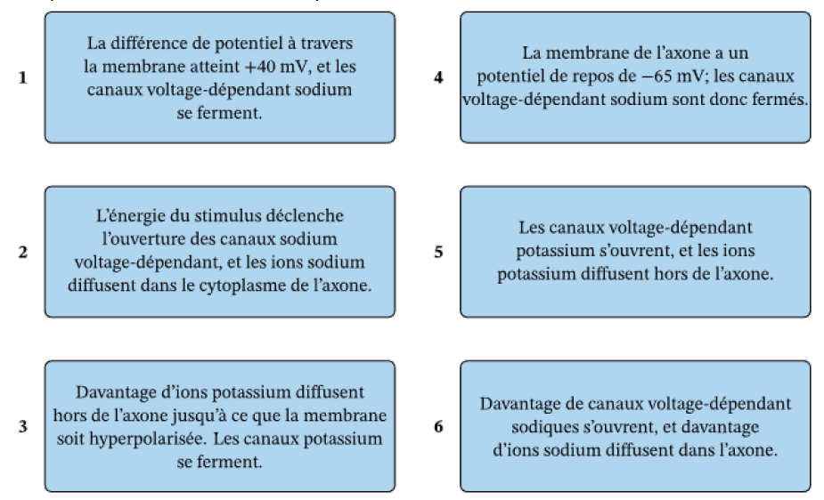
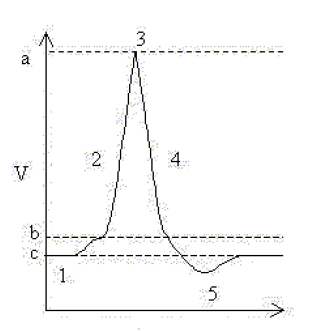
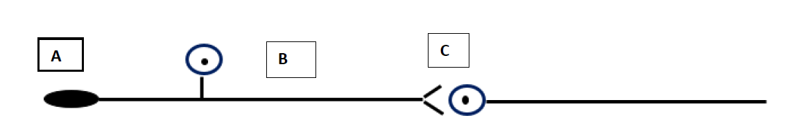
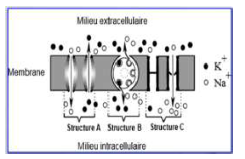
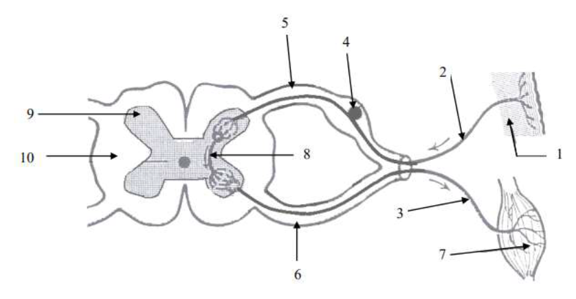

Attribuez les caractéristiques suivantes au(x) potentiel(s) correspondant(s) : PA, PPSE, ou PPSI.
a- nécessite l'intervention des canaux voltages-dépendants.
b- se propage sur de longues distances en conservant les mêmes caractéristiques.
c- traduit une dépolarisation de la membrane du neurone.
d- nécessite que le neurone soit dépolarisé jusqu'au seuil pour avoir lieu.
e- est provoqué par une entrée d'ions Na+ dans le neurone.
f- est provoquée par une augmentation de la perméabilité membranaire aux ions Cl-.
g- résulte de l'action d'un neurotransmetteur.
h- est le signal d'un message codé en fréquence.
i- éloigne la membrane du potentiel seuil.
Réponses attendues :
Potentiel d'action : a, b, c, d, e, h
PPSE : c, e, g
PPSI : f, g, i
Exercice 4 : Étapes d'un potentiel d'action
Indiquez l'ordre correct des étapes numérotées du diagramme :

Réponse attendue :
La séquence d'événements correcte du potentiel d'action est : 4, 2, 6, 1, 5, 3
Exercice 5 : Analyse de graphique

1) À quoi correspondent les potentiels b et c ?
Réponse attendue :
b : potentiel seuil, c : potentiel de repos
2) Quel phénomène ionique est responsable du changement de la situation 1 à 3 ?
Réponse attendue :
Ouverture des canaux voltage-dépendants à Na+, activés quand le potentiel de membrane atteint la valeur seuil → entrée de Na+ dans le neurone → l'intérieur devient positif par rapport à l'extérieur.
3) Quel phénomène ionique est responsable du changement de la situation 3 à 4 ?
Réponse attendue :
Inactivation des canaux à Na+ et ouverture des canaux à K+ → sortie des ions K+
4) Quels seraient les effets d'un inhibiteur de canaux à Na+ ?
Réponse attendue :
Pas d'ouverture des canaux à Na+ → pas d'entrée de Na+ → pas de dépolarisation → pas de PA
5) Le TEA est un bloqueur de K+. Quel sera son effet sur le potentiel de membrane ?
Réponse attendue :
Pas d'ouverture des canaux à K+ → pas de sortie de K+ du neurone → repolarisation très lente due uniquement à l'activité des canaux de fuite potassiques et aux pompes (sortie de Na+) → durée du potentiel d'action prolongée et de la période réfractaire également. Pas d'hyperpolarisation.
Exercice 6 : Synapse et récepteur

1) Que désignent les légendes A, B et C ?
Réponse attendue :
A : Récepteur sensoriel
B : Neurone sensitif (neurone en T)
C : Synapse interneuronale
2) Indiquez quels potentiels nerveux on trouve au niveau de chacune de ces structures :
Réponse attendue :
A : Potentiel de récepteur / potentiel générateur
B : Potentiel d'action
C : Potentiel post-synaptique
(Les potentiels de récepteurs et les PPS ont les mêmes caractéristiques)
Exercice 7 : Mouvements ioniques

1) Nommez les structures A, B et C.
Réponse attendue :
A : canaux de fuite, toujours ouverts
B : pompe ionique Na+/K+ (fait sortir 3 ions Na+ et entrer 2 ions K+ contre le gradient)
C : canaux voltage dépendants (ne s'ouvrent que lorsque la membrane est dépolarisée)
2) Précisez l'origine du potentiel de repos.
Réponse attendue :
Le potentiel de repos est dû à la répartition inégale des ions Na+ et K+ de part et d'autre de la membrane plasmique. Cela s'explique par :
- La perméabilité sélective de la membrane aux ions Na+ et K+ (canaux de fuite à K+ plus efficaces que ceux à Na+)
- La présence de la pompe Na+/K+ qui transporte les ions contre leur gradient de concentration.
3) À quelle phase du PA correspond le document 1 ?
Réponse attendue :
Il représente la phase de dépolarisation : entrée massive des ions Na+ due à l'ouverture des canaux voltage-dépendants à Na+ alors que les canaux voltage-dépendants à K+ sont fermés.
4) Complétez le tableau d'état des canaux :
Donnez l'état (Ouverts/Fermés/Active) pour : Repos, Dépolarisation, Repolarisation, Hyperpolarisation pour chaque type de canal.
Réponses attendues :
Canaux fuite K+
Canaux fuite Na+
CVD K+
CVD Na+
Pompe Na+/K+
Potentiel de repos
Ouverts
Ouverts
Fermés
Fermés
Active
Dépolarisation
Ouverts
Ouverts
Fermés
Ouverts
Active
Repolarisation
Ouverts
Ouverts
Ouverts
Fermés
Active
Hyperpolarisation
Ouverts
Ouverts
Ouverts
Fermés
Active
Exercice 8 : Schéma de la moelle épinière

Indiquez le nom des différentes structures du schéma (1 à 10) :
Réponses attendues :
1. Récepteur sensoriel / fuseau neuromusculaire
2. Neurone sensitif / fibre afférente
3. Neurone moteur / motoneurone
4. Corps cellulaire du neurone sensitif / ganglion rachidien